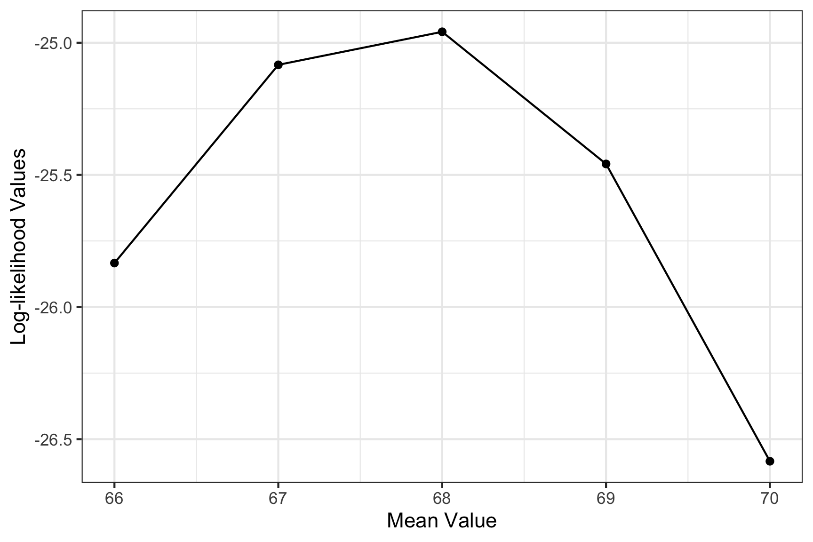
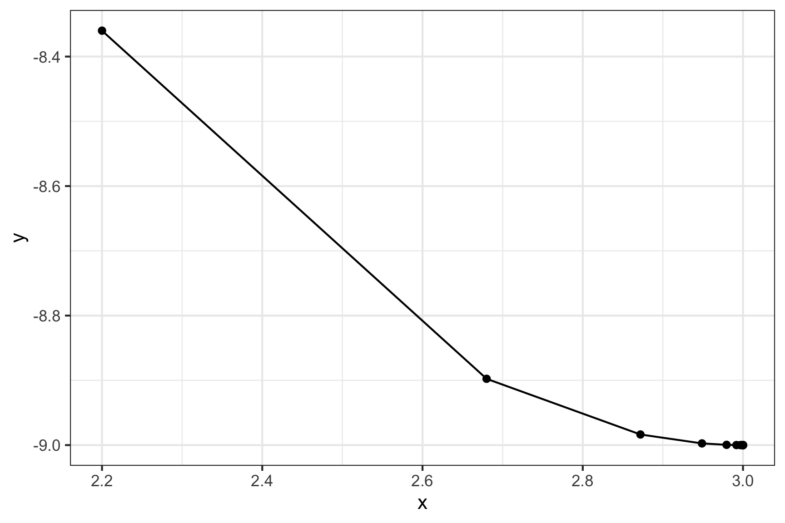
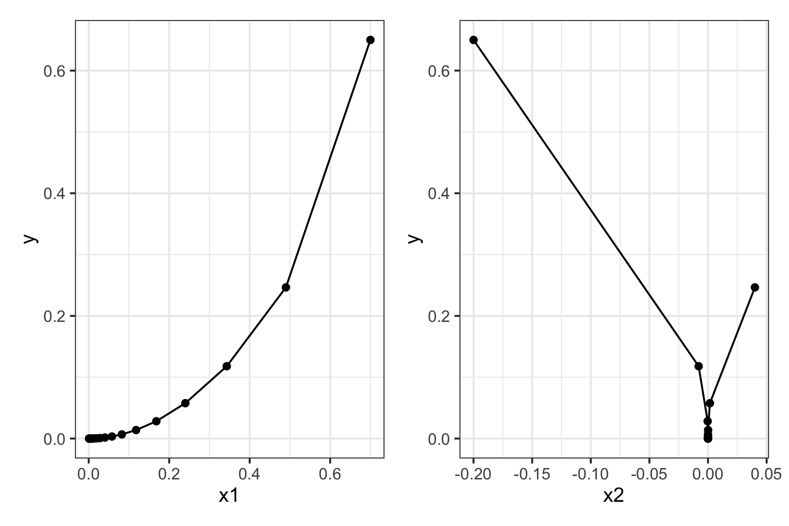

#> [1] 65 69 66 67 68 72 68 69 63 70Practice Questions 1
Observations - Height of students (inches):
- Let’s say we know that the height of students, \(\tilde{x}\), in a classroom follows a normal distribution. A professor obtains the above height measurements students in her classroom. What is the log-likelihood that \(\tilde{x} \sim \mathcal{N} (68, 4)\)? In other words, compute \(\ln \mathcal{L} (\mu = 68, \sigma = 4)\).
# Load the data
x <- c(65, 69, 66, 67, 68, 72, 68, 69, 63, 70)
# Compute the value of f(x) for each x
f_x <- dnorm(x, 68, 4)
# The likelihood is just the product of the probabilities in f_x
prod(f_x)#> [1] 1.447528e-11# But this is a really tiny number, so computing the log-likelihood is helpful
log(prod(f_x))#> [1] -24.95858# Of course, the way we typically compute the log-likelihood is by summing up
# the log of the values in f_x
sum(log(f_x))#> [1] -24.95858- Compute the log-likelihood function using the same standard deviation \((\sigma = 4)\) but with the following different values for the mean, \(\mu: 66, 67, 68, 69, 70\). How do the results compare? Which value for \(\mu\) produces the highest log-likelihood?
library(tidyverse)
# Create a vectors of values for the mean
means <- c(66, 67, 68, 69, 70)
# Compute the likelihood using different values for the mean:
L1 <- sum(log(dnorm(x, means[1], 4)))
L2 <- sum(log(dnorm(x, means[2], 4)))
L3 <- sum(log(dnorm(x, means[3], 4)))
L4 <- sum(log(dnorm(x, means[4], 4)))
L5 <- sum(log(dnorm(x, means[5], 4)))
logLiks <- c(L1, L2, L3, L4, L5)
# Create a data frame of the results
df <- data.frame(means, logLiks)
df#> means logLiks
#> 1 66 -25.83358
#> 2 67 -25.08358
#> 3 68 -24.95858
#> 4 69 -25.45858
#> 5 70 -26.58358# Filter out the row with the maximum likelihood value:
df %>%
filter(logLiks == max(logLiks))#> means logLiks
#> 1 68 -24.95858# Plot the result:
df %>%
ggplot(aes(x = means, y = logLiks)) +
geom_line() +
geom_point() +
theme_bw() +
labs(x = "Mean Value", y = "Log-likelihood Values")
Practice Questions 2
Consider the following function:
\[f(x) = x^2 - 6x\]
The gradient is:
\[\nabla f(x) = 2x - 6\]
Using the starting point \(x = 1\) and the step size \(\gamma = 0.3\), apply the gradient descent method to compute the next three points in the search algorithm.
# Define the step size and the starting point:
step <- 0.3
x0 <- 1
# Compute the first three steps of the gradient descent method:
x1 <- x0 - step*(2*x0 - 6)
x2 <- x1 - step*(2*x1 - 6)
x3 <- x2 - step*(2*x2 - 6)
# Display results
c(x0, x1, x2, x3)#> [1] 1.000 2.200 2.680 2.872# Use the function to compute the next 20 steps:
df <- data.frame(step = seq(1, 20), x = 0)
step <- 0.3
x0 <- 1
for (i in 1:nrow(df)) {
x1 <- x0 - step*(2*x0 - 6)
df$x[i] <- x1
x0 <- x1
}
df#> step x
#> 1 1 2.200000
#> 2 2 2.680000
#> 3 3 2.872000
#> 4 4 2.948800
#> 5 5 2.979520
#> 6 6 2.991808
#> 7 7 2.996723
#> 8 8 2.998689
#> 9 9 2.999476
#> 10 10 2.999790
#> 11 11 2.999916
#> 12 12 2.999966
#> 13 13 2.999987
#> 14 14 2.999995
#> 15 15 2.999998
#> 16 16 2.999999
#> 17 17 3.000000
#> 18 18 3.000000
#> 19 19 3.000000
#> 20 20 3.000000# Plot the algorithm
df %>%
mutate(y = x^2 - 6*x) %>%
ggplot(aes(x = x, y = y)) +
geom_line() +
geom_point() +
theme_bw()
Practice Questions 3
Consider the following function:
\[ f(\underline{x}) = x_1^2 + 4x_2^2 \]
The gradient is:
\[ \nabla f(\underline{x}) = \begin{bmatrix} 2x_1 \\ 8x_2 \end{bmatrix} \]
Using the starting point \(\underline{x}_0 = [1, 1]\) and the step size \(\gamma = 0.15\), apply the gradient descent method to compute the next three points in the search algorithm.
# Define the step size and the starting point:
step <- 0.15
x0 <- c(1, 1)
# Compute the first three steps of the gradient descent method:
x1 <- x0 - step*(c(2, 8)*x0)
x2 <- x1 - step*(c(2, 8)*x1)
x3 <- x2 - step*(c(2, 8)*x2)
# Display results
cbind(x0, x1, x2, x3)#> x0 x1 x2 x3
#> [1,] 1 0.7 0.49 0.343
#> [2,] 1 -0.2 0.04 -0.008# Use a loop to compute the next 20 steps:
df <- data.frame(stepNumber = seq(1, 20), x1 = 0, x2 = 0)
x0 <- c(1, 1)
step <- 0.15
for (i in 1:nrow(df)) {
x1 <- x0 - step*(c(2, 8)*x0)
df[i, c('x1', 'x2')] <- x1
x0 <- x1
}
df#> stepNumber x1 x2
#> 1 1 0.7000000000 -2.000000e-01
#> 2 2 0.4900000000 4.000000e-02
#> 3 3 0.3430000000 -8.000000e-03
#> 4 4 0.2401000000 1.600000e-03
#> 5 5 0.1680700000 -3.200000e-04
#> 6 6 0.1176490000 6.400000e-05
#> 7 7 0.0823543000 -1.280000e-05
#> 8 8 0.0576480100 2.560000e-06
#> 9 9 0.0403536070 -5.120000e-07
#> 10 10 0.0282475249 1.024000e-07
#> 11 11 0.0197732674 -2.048000e-08
#> 12 12 0.0138412872 4.096000e-09
#> 13 13 0.0096889010 -8.192000e-10
#> 14 14 0.0067822307 1.638400e-10
#> 15 15 0.0047475615 -3.276800e-11
#> 16 16 0.0033232931 6.553600e-12
#> 17 17 0.0023263051 -1.310720e-12
#> 18 18 0.0016284136 2.621440e-13
#> 19 19 0.0011398895 -5.242880e-14
#> 20 20 0.0007979227 1.048576e-14# Plot the algorithm
plot1 <- df %>%
mutate(y = x1^2 + 4*x2^2) %>%
ggplot(aes(x = x1, y = y)) +
geom_line() +
geom_point() +
theme_bw()
plot2 <- df %>%
mutate(y = x1^2 + 4*x2^2) %>%
ggplot(aes(x = x2, y = y)) +
geom_line() +
geom_point() +
theme_bw()
plot1 + plot2
In Class Questions 1
- Write code to read in the
state_abbs.csvandstate_regions.csvdata files in the “data” folder.
regions <- read_csv(here::here('data', 'state_regions.csv'))
abbs <- read_csv(here::here('data', 'state_abbs.csv'))- Create a new data frame called
statesby joining the two data framesstates_abbsandstate_regionstogether. The result should be a data frame with variablesregion,name,abb.
states <- regions %>%
left_join(abbs, by = c('state' = 'state_name')) %>%
select(region, name = state, abb = state_abb)
head(states)#> # A tibble: 6 × 3
#> region name abb
#> <chr> <chr> <chr>
#> 1 Northeast Maine ME
#> 2 Northeast New Hampshire NH
#> 3 Northeast Vermont VT
#> 4 Northeast Massachusetts MA
#> 5 Northeast Rhode Island RI
#> 6 Northeast Connecticut CT